如果您使用 ModelBuilder 在 2D 素材的顶部添加新对象 (例如，向建筑物添加新窗口或在街道旁边添加额外的垃圾箱), 你不能在这些物体上投影你的 2D 镜头，因为它们从来没有出现在原始镜头中。相反，您需要从其他地方提供纹理，并将其映射到 3D 对象的表面。
| 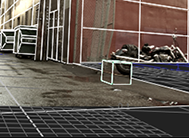 | 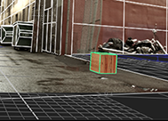 |
|
一个额外的立方体已经
添加到场景中。 它不能使用纹理 原始镜头。 |
在这里，立方体已经
纹理分开。 |
要将纹理图像映射到 3D 对象的表面，首先需要通过一个名为 UV 展开的过程将 3D 对象展开到 2D 空间中。这将为对象中的每个顶点生成 UV 坐标，允许您将 3D 对象表面上的点映射到纹理图像中的像素。
| 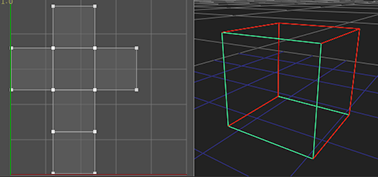 |
| 一个 3D 立方体被夷为平地变成 2D 空间。 |
| 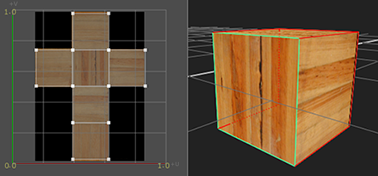 |
|
编辑立方体时预览纹理图像
UV 坐标。 |
提示:
Uv 只是二维坐标，告诉 3D 应用程序如何将纹理应用于模型。选择字母 U 和 V 是因为 X 、 Y 和 Z 已经被用来表示 3D 空间中物体的轴。U 坐标表示 2D 纹理的水平轴，V 坐标表示垂直轴。
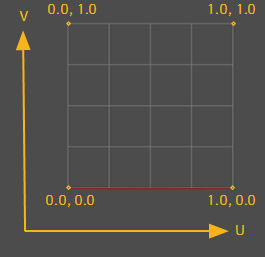
UV 展开的过程大致如下:
| 1。 | 定义切割模型的位置，以便将模型展平到 2D 空间。请参阅 在模型上创建接缝 . |
| 2. | 展开模型并预览结果。请参阅 展开模型并预览其 uv . |
| 3. | 根据需要编辑生成的 uv。请参阅 编辑 uv . |
| 4. | 将纹理应用于模型。请参阅 应用纹理 . |
要准备 UV 展开的模型，需要标记一些接缝。接缝告诉 ModelBuilder 允许在哪里切割模型，以便将其展平到 2D 空间。
提示: 如果你没有足够的接缝标记，展开将会非常糟糕，有很多重叠的面以及拉伸和扭曲。另一方面，过多的接缝会使对象难以纹理化，因为接缝中的间隙很容易在纹理化对象上变得明显。如果可能的话，最好将接缝隐藏在看不到的区域。
| 1。 |
如果使用同一 ModelBuilder 节点创建了多个对象，请单击
|
| 2. | 在 ModelBuilder 工具栏中，单击 激活 UV 模式。 |
| 3. | 重复以下一项或多项操作，直到找到一组好的接缝: |
• 要将边缘标记为接缝，请在查看器上单击鼠标右键，然后选择 边选择 。选择模型上的边，单击鼠标右键，然后选择 标记为接缝 .
| 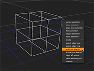 | 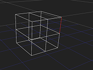 |
• 要将循环边标记为接缝，请在查看器上单击鼠标右键，然后选择 循环边选择 。选择模型上的循环边，单击鼠标右键，然后选择 标记为接缝 .
| 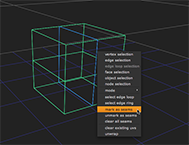 | 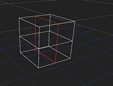 |
• 要将面周围的所有边标记为接缝，请在查看器上单击鼠标右键，然后选择 面选择 。在模型上选择一个面，单击鼠标右键，然后选择 标记为接缝 .
| 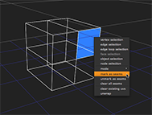 | 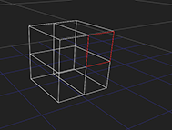 |
提示: 也可以选择面环，并将其周围的所有边标记为接缝。为此，请在模型上选择至少两个面，单击鼠标右键，然后选择 选择面循环 。然后，再次右键单击查看器并选择 标记为接缝 .
• 要从接缝集中移除边、循环边或面，请在查看器中选择它，单击鼠标右键，然后选择 取消标记为 seam .
• 要清除所有接缝，请在对象上单击鼠标右键，然后选择 清除所有接缝 .
任何标记为接缝的边缘都将在查看器中以红色显示。
| 4. | 继续到 展开模型并预览其 uv 下面。 |
提示: 为建筑物 (或任何其他大致为立方体或圆柱形的物体) 创建一组良好接缝的最简单方法是 1) 选择顶面并将其标记为接缝，2) 选择底面并将其标记为接缝，3)选择模型一侧连接顶部和底部的边，并将其标记为接缝。
一旦你对你的接缝很满意，你就可以打开模型了。
| 1。 | 右键单击查看器并选择 对象选择 . |
| 2. | 右键单击模型并选择 展开包装 . |
查看器窗口周围出现彩色边框，表示操作正在进行。
| 3. | 新闻 返回 完成展开。 |
ModelBuilder 为模型上的每个顶点生成 UV 值。展开的模型显示在查看器左上角的 UV 预览窗口中。
| 4. | 要在 UV 预览窗口中将 2D 纹理图像显示为背景，请将图像连接到 ModelBuilder 的 Tex 输入并确保 预览 ModelBuilder 属性 (或查看器顶部) 中的下拉列表设置为 Tex 输入 。也看到了 Tex 在 3D 查看器中输入模型，设置 显示 要么 纹理 或 纹理 + 线框 在 ModelBuilder 属性中。 |
| 5. | 要放大或缩小 UV 预览窗口，请按 Ctrl / Cmd + Alt 和拖动。 |
| 6. | 要平移 UV 预览窗口，请按 Ctrl / Cmd 和拖动。 |
| 7. | 要更改 UV 预览窗口的大小，请单击并拖动其右下角。 |
| 8。 | 要隐藏 UV 预览窗口，请禁用 Uv 窗口 在观众的顶部。 |
| 9. | 继续到 编辑 uv 下面。 |
提示: 如果您对生成的 uv 不满意，可以在模型上单击鼠标右键，然后选择 清除现有 uv 。如有必要，还可以更改接缝并再次展开模型。每次这样做，ModelBuilder 都会将您拥有的 uv 替换为新生成的 uv。
您可以调整查看器顶部的控件，或在 UV 预览窗口中手动编辑 UV。
| 1。 | 调整查看器顶部的以下控件: |
• 迭代 -Unwrapper 应用其关于如何将 UV 坐标移动到好的位置的规则的次数。这给了你一个速度与质量的权衡: 更多的迭代会给出更好的结果，但是需要更长的时间来打开包装。请注意，结果只能改进到某一点，并且该点的位置取决于模型的复杂性。
• 阈值 -Unwrapper 在达到最大数量之前停止 迭代 如果它看到从迭代到迭代的改进可以忽略不计。的 阈值 控制告诉它多少变化被认为是可以忽略的。如果迭代之间的更改量低于阈值，则取消包装将停止。这是另一种以质量换取速度的方式。如果你想要一个更高质量的结果，你通常会使用这个: 如果你增加了 迭代 但是 unwrapper 在达到最大值之前停止，您可以降低阈值以使其保持运行。
• 分离 -在展开中每个补丁之间留下的像素数量。如果你的补丁之间没有足够的像素，当你使用纹理时，你可以从相邻的补丁中获得颜色出血。更高的值意味着更广泛的间隔补丁，但也浪费了更多的空间在你的纹理图像。
编辑这些控件时，UV 预览窗口将更新，以允许您查看更改的效果。
| 2. | 如有必要，还可以在 UV 预览窗口中手动编辑 UV: |
• 要编辑单个顶点，请将其拖到新位置。
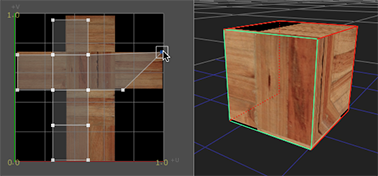
• 要一起编辑几个顶点，请选择它们并使用显示的变换插孔来平移、旋转或缩放选择。变换千斤顶与其他地方使用的千斤顶相同 Nuke ,所以所有的控件都以相同的方式工作。例如，可以单击并拖动控制柄以从中心向外缩放，或者 Ctrl / Cmd 单击并拖动以从相对边缘向外缩放。
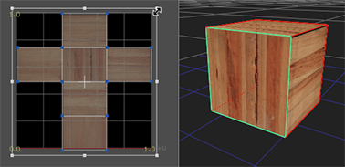
| 3. | 继续到 应用纹理 . |
在这一点上，可能是你在场景中有几个物体，你仍然想把你的相机镜头投射到 (参见 将纹理投影到形状上 ,但是有一个对象想要以不同的方式纹理。有两种方法可以做到这一点:
• 可以将模型导出为单独的几何节点，并使用 ApplyMaterial 节点对其进行纹理处理。如果几何图形完成并被锁定，这可能是一种方便的工作方式，所以你永远不需要回去改变它。但是你失去的是 “实时” 视图: 如果你确实需要返回并编辑对象，你必须再次导出它。请参阅 方法 1 .
• 或者，您可以直接在 ModelBuilder 节点之后添加一个 ApplyMaterial 节点，并告诉 ApplyMaterial 忽略所有与您提供的过滤器不匹配的几何图形。请参阅 方法 2 .
| 1。 | 在 ModelBuilder 属性中，选择要以不同方式纹理的对象。 |
| 2. | 在 “属性” 面板的底部，将 “烘焙” 菜单设置为 选定几何 并单击 烘焙 . |
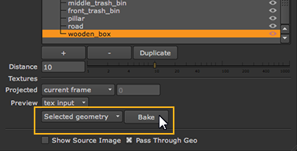
ModelBuilder 为选定对象创建几何节点。
| 3. | 从工具栏中选择 3D > 着色器 > 应用材料 创建 ApplyMaterial 节点。 |
| 4. | 将在步骤 2 中创建的几何节点连接到 ApplyMaterial 节点的未命名输入。 |
| 5. | 然后，将您的 2D 纹理图像连接到 垫子 ApplyMaterial 节点的输入。 |
ApplyMaterial 节点应用来自 垫子 输入到 3D 几何对象上。(为了能够在 3D 查看器中看到这一点，您可能必须在 ModelBuilder 属性中隐藏对象。)
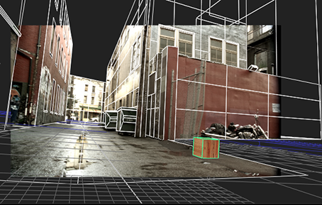
| 6. | 将 ApplyMaterial 节点连接到场景节点，并使用 ScanlineRender 节点渲染连接到该场景的所有对象。 |
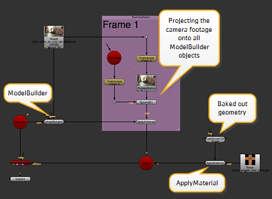
| 1。 | 从工具栏中选择 3D > 着色器 > 应用材料 创建 ApplyMaterial 节点。 |
| 2. | 将 ApplyMaterial 节点的未命名输入连接到 ModelBuilder 节点和 垫子 输入到 2D 纹理图像。 |
默认情况下，ApplyMaterial 应用来自 垫子 输入到 ModelBuilder 节点中的所有对象。
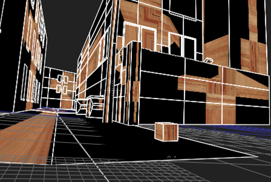
| 3. | 若要仅将纹理应用于特定对象，请打开 ApplyMaterial 属性并设置 过滤器 到 名称 。这允许您告诉 ApplyMaterial 忽略任何与过滤器不匹配的几何图形。 |
| 4. | 要设置过滤器，请单击 选择 按钮。在打开的对话框中，选择要应用纹理的对象，然后单击 好 . |
提示: 你也可以 Ctrl / Cmd 单击或 转变 单击选择多个对象。
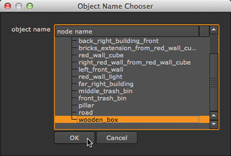
有关应用材料的更多信息，请参见 使用 ApplyMaterial 节点应用材质 .
| 5. | 将 ApplyMaterial 节点连接到场景节点，并使用 ScanlineRender 节点渲染连接到该场景的所有对象。 |
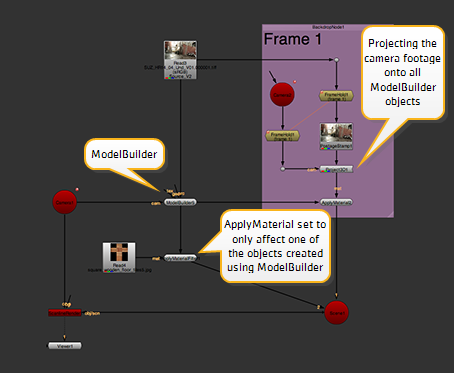
|
|